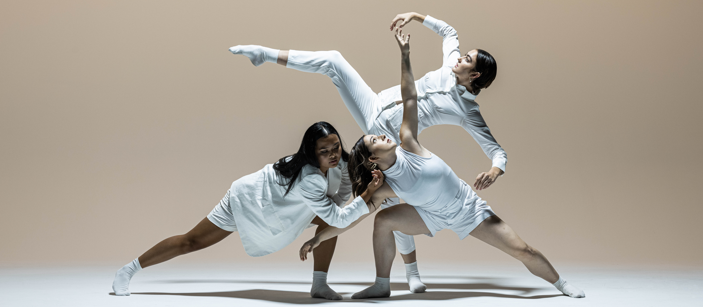

CONTEMPORERY
Charakteristika tance
Scénický tanec je určený pro divadelní scénu, nemá žádná striktní pravidla ani omezení. Cílem scénického tance je vyjádření příběhu, myšlenky nebo pocitu. Většinou postrádá strnulé pózy, důraz je kladen na plynulý tok pohybů, přirozenost a originalitu pohybového vyjádření. V poslední době má i velké rozšíření mezi tanečními soutěžemi, ve kterých se pohybuje na velmi vysoké úrovni.
Důraz je kladen především na duševní dění – pocity, myšlenky – a to je přenášeno do pohybu. Hudba bývá většinou pochmurná a smutná, ale jsou výjimky, u kterých to je naopak nebo méně znatelné. Tzv. improvizace k scénickému tanci je libovolný tanec, který tanečník vymýšlí za pochodu. Tanečník by se měl do hudby zaposlouchat a sám zjistit, jaké pohyby se k hudbě hodí.
Scénický tanec se dá tančit ve skupině. Různé efekty například v řadách napomůžou k vyjádření pocitů a diváka to více pohltí. U tohoto tance nezáleží jen na taneční stránce, ale i na herecké. Herec nemluví, ale tancuje. V moderním tanci se často používají pohyby na zemi, které i ve stoje musí být výrazové a vyžadují ohebnost. Tanečníci scénického tance tancují často bosi. Jejich gesta jsou svým způsobem stejně výmluvná jako v baletu. Pohyby vymýšlí choreograf, který hraje velikou roli. Je něco jako skladatel v hudbě nebo malíř ve výtvarn
ém umění, ale na rozdíl od nich pracuje s živými lidmi.
